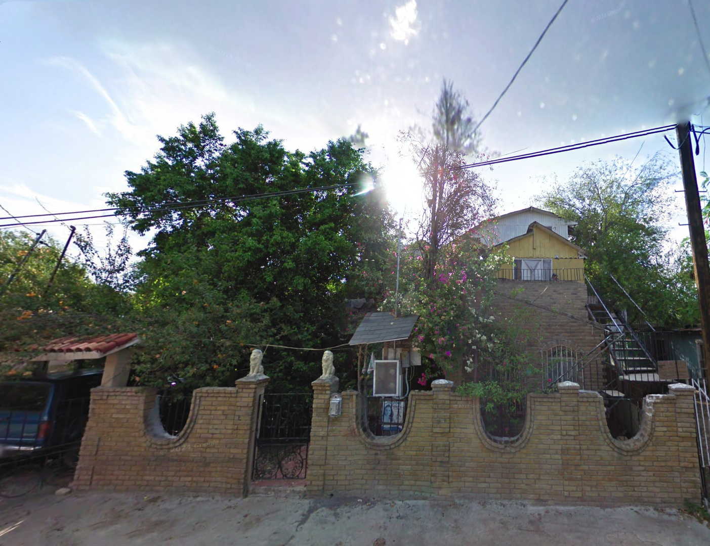

About OrozcoRealty LLC
Our Mission
OrozcoRealty LLC is a veteran-owned real estate investment firm based in San Antonio, Texas, focused on the revitalization of underserved communities through strategic property acquisition, renovation, and tenant-first leasing models. We aim to provide affordable, safe, and modern housing options for families and veterans across South Texas.
Our History
Founded by a retired USAF project analyst and led on-site by a master construction foreman with over 30 years of experience, our company merges military precision with tradesman quality. With deep ties to El Cenizo and San Antonio, we are proud to continue a family legacy of housing access and economic empowerment.
Our Approach
We combine data analytics with boots-on-the-ground construction management to identify undervalued assets and bring them to full market potential. Our properties support rent-to-own paths, Section 8 eligibility, and long-term housing stability for working-class families.